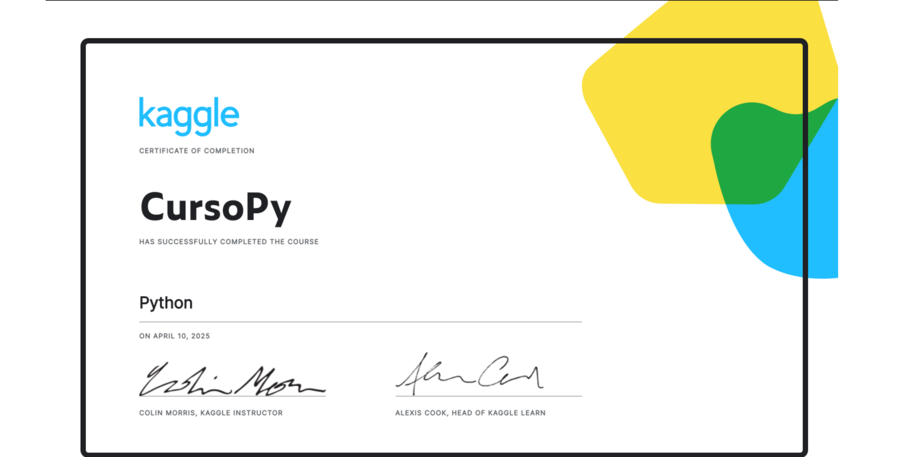
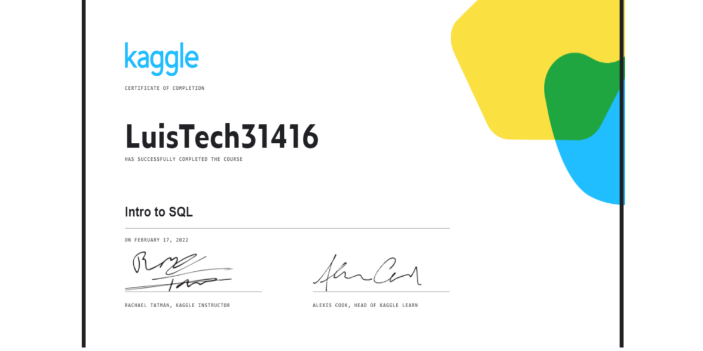
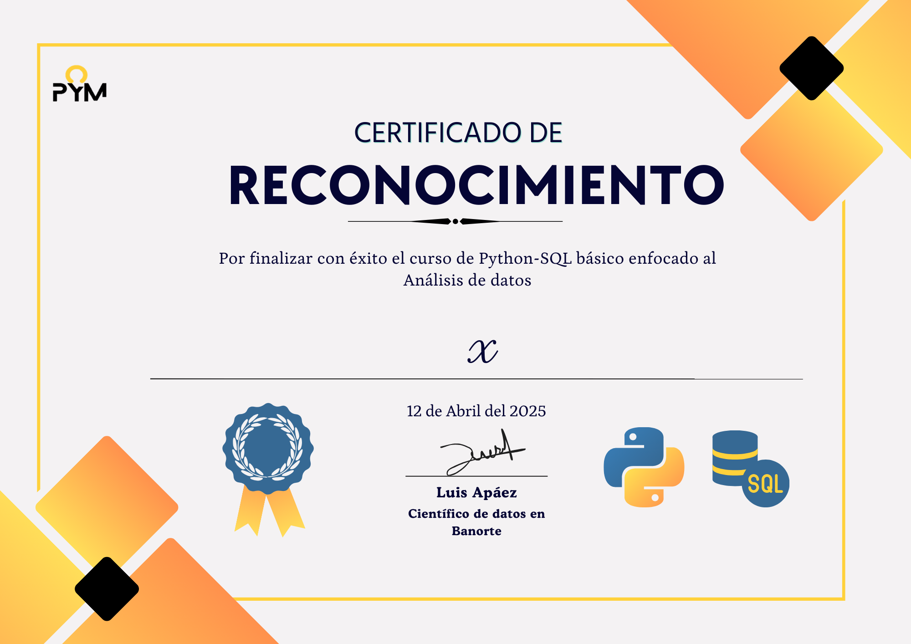

Módulo I: Generación del insumo
En este módulo aprenderemos a programar en Python,
con lo cual montaremos un flujo de datos correspondiente a las ventas de una papelería. Aprenderemos
a manipular datos y crear información. Recordemos que en un flujo de datos podemos tener tres etapas:
- Insumo: Aquí es donde obtenemos/extraemos/generamos el insumo, en este caso las ventas de la papelería.
- Alimentación de la base de datos: Aquí es donde acumulamos la información que tenemos del insumo.
- Análisis de datos: Aquí es donde creamos dashboards y reportes para presentar la información.
De tal manera, el contenido del curso se divide, justamente, en tres módulos, uno por etapa.
📖 Clase 1
En esta clase aprenderemos a programar desde cero y nos enfocaremos en aplicar directamente lo aprendido
en el proyecto de ventas, para lo cual el objetivo de la clase será imprimir un ticket de venta.
De tal suerte, los temas clave que veremos en esta clase son:
- Introducción a la programación
- Tipos de datos
- Strings
- Variables
- Estructuras de datos: Listas
- Librería Random
| Grabación: Impresión de un ticket de venta en una papelería |
Notas en vivo|
Notas |
📖 Clase 2
En continuación con la clase anterior, realizaremos la simulación de ventas de la papelería y las guardaremos en un dataframe de pandas.
Lo cual nos permitirá en la siguiente clase alimentar una base de datos con las ventas históricas de la papelería. Así, en esta clase
aprenderemos sobre
- Bucles y condicionales
- Bucle
For
- +Random
- +Listas
- Introducción a Pandas 🐼
| Grabación: Dataframe con las ventas diarias en la papelería
| Notas en vivo |
Notas |
⭐ Clase 3
Al haber generado la información en un dataframe, lo que sigue es automatizar el proceso mediante funciones definidas por el usuario, así,
abordaremos los siguientes temas:
- Introducción a la POO
- Funciones definidas por el usuario
Grabación: | Automatizaciones |
Notas |
Módulo I: Generación del insumo
En este módulo aprenderemos a programar en Python,
con lo cual montaremos un flujo de datos correspondiente a las ventas de una papelería. Aprenderemos
a manipular datos y crear información. Recordemos que en un flujo de datos podemos tener tres etapas:
- Insumo: Aquí es donde obtenemos/extraemos/generamos el insumo, en este caso las ventas de la papelería.
- Alimentación de la base de datos: Aquí es donde acumulamos la información que tenemos del insumo.
- Análisis de datos: Aquí es donde creamos dashboards y reportes para presentar la información.
De tal manera, el contenido del curso se divide, justamente, en tres módulos, uno por etapa.
📖 Clase 1
En esta clase aprenderemos a programar desde cero y nos enfocaremos en aplicar directamente lo aprendido
en el proyecto de ventas, para lo cual el objetivo de la clase será imprimir un ticket de venta.
De tal suerte, los temas clave que veremos en esta clase son:
- Introducción a la programación
- Tipos de datos
- Strings
- Variables
- Estructuras de datos: Listas
- Librería Random
Adicionalmente, realizaremos la simulación de ventas de la papelería y las guardaremos en un dataframe de
pandas,
esto es, "generaremos varios tickets de venta" y los guardaremos en una tabla de
Python, así, veremos también
- Bucles y condicionales
- Bucle
For
- +Random
- +Listas
- Introducción a Pandas 🐼
Grabación: | Tabla y ticket de ventas |
Notas en vivo|
Proyecto
Es esta sección estarás los códigos y materiales del proyecto, es decir, en esta sección encontrarás los avances y ejercicios
que deberás ir entregando.
Primero, mostramos el código completo ya terminado del proyecto (hecho en enero de este año) para establecerlo como la meta a alcanzar en el curso, luego, en las siguientes secciones
(o cajas) irás encontrando ejercicios, cuestionarios y avances para que puedas ir avanzando en tu propio proyecto.
PROYECTO 1: Código y tablero objetivo (código completo del proyecto final):
Link
Tablero
Avances
Primera entrega:
Descripción
Entregar
Segunda entrega:
Descripción
Entregar
Tercera entrega:
Descripción
Entregar
Cuarta entrega:
Descripción
Entregar
Certificado de Python
Descripción: Soluciones al curso de Python
de la plataforma Kaggle
(Link)

💎 Solución Clase 1 💎
💎 Solución Clase 2 💎
💎 Solución Clase 3 💎
💎 Solución Clase 4 💎
💎 Solución Clase 5 💎
💎 Solución Clase 6 💎
💎 Solución Clase 7 💎
Certificado de SQL
Próximamente

Certificado de Python + SQL
Descripción: Este certificado es emitido por cursos Pym, destinado para los
estudiantes que cursaron con éxito el curso en vivo de Python y SQL enfocado al análisis de datos.
Requisitos:
- Haber entregado el código completo del proyecto.
- Haber enviado captura de su tablero de Power BI.
- Haber aprobado con m+as de 8 de calificación en el examen final del curso

Curso introductorio de R
En este módulo aprenderemos a programar en R, con el objetivo de trasladar los conocimientos que ya adquirimos
en las clases en vivo con Python, ahora a este nuevo lenguaje. La idea es que puedas fortalecer tu aprendizaje de
manera autodidacta, practicando los mismos conceptos pero desde la lógica y sintaxis de R, un lenguaje ampliamente
usado en análisis estadístico y ciencia de datos.
Este enfoque te permitirá comparar, contrastar y dominar ambos lenguajes, lo cual es una gran ventaja en el mundo laboral.
Usaremos el mismo caso de la papelería, con su flujo de datos de ventas, para replicar en R todo lo que hicimos en Python.
Índice
- Impresión de un ticket de ventas + vectores
- Generación de un dataframe con las ventas de la papelería
- Automatizaciones e introducción a
SQL
- Variables, vectores y tipos de datos
- Bucles, condicionales y funciones
- Matrices, lectura de datos y dataframes
Parte I: 🪞 Espejeando lo visto en Python
Impresión de un ticket de ventas + vectores
Clase 1: | Notas de Clase | Tarea 1 | Entregar |
Generación de un dataframe con las ventas de la papelería
Clase 2: | Notas de Clase | Tarea 2 |
Automatizaciones e introducción a SQL
Clase 3: | Notas de Clase | Tarea 3 |
Parte II: Profundizando en R
Variables, vectores y tipos de datos
Clase 4: | Notas de Clase (incluyen ejercicios) |
Bucles, condicionales y funciones
Clase 5: | Notas de Clase (incluyen ejercicios) |
Matrices, lectura de datos y dataframes
Clase 6: | Notas de Clase (incluyen ejercicios) |
Parte III: Taller de graficación en R